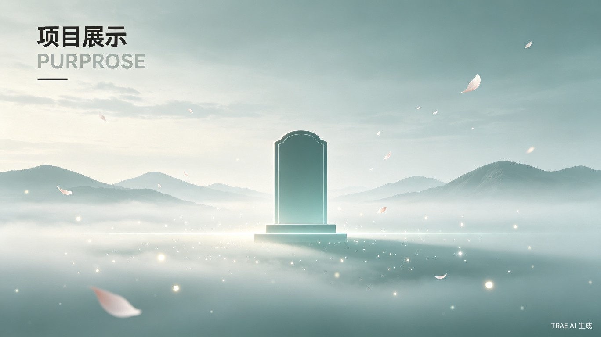
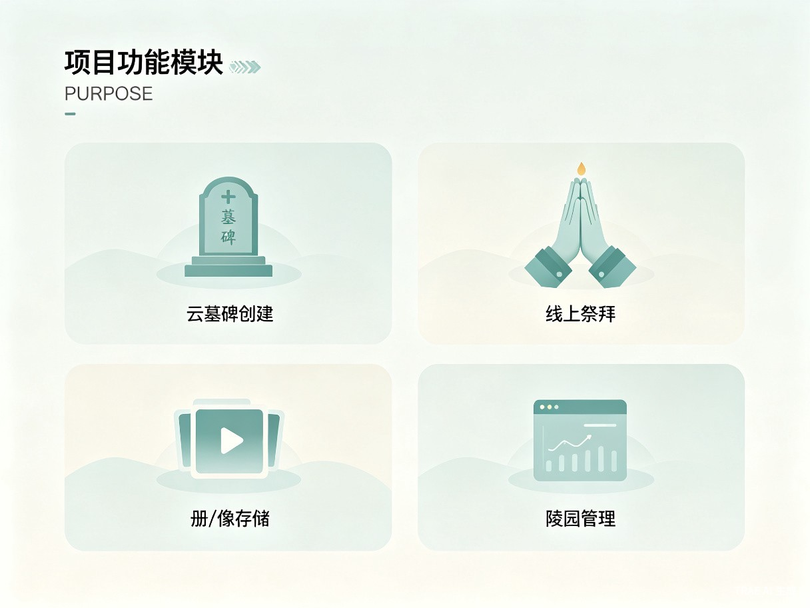

以科技承载记忆，以云端延续温情
云端数字墓园是一款面向数字时代的人文纪念云平台，旨在通过云计算、数字孪生与多媒体技术，为逝者家属、陵园机构及公益纪念人群提供线上追思与永久纪念服务。
传统祭扫受限于地理距离与时间安排，许多异地家属难以亲临墓前表达哀思。本项目以"云端"为载体，打造一座永不落幕的数字纪念空间——在这里，每一座云墓碑都是一份可永久传承的数字档案，每一次线上祭拜都是一次跨越时空的情感连接。
平台秉持绿色文明祭扫理念，减少纸质祭品与交通碳排放，以数字化方式守护生态环境；同时通过影像存储与家族谱系管理，让家族回忆得以永久留存、代代相传。

四大模块构建完整的云端纪念生态
为逝者创建个性化数字墓碑，支持生平简介、照片、寄语等内容的永久展示。多种庄重模板可选，可自定义风格与配色，打造独一无二的纪念空间。
支持虚拟献花、点烛、上香、留言等祭拜仪式，亲友可随时随地进入云墓园表达哀思。提供实时同步的家族共祭功能，让分散各地的亲人同屏追思。
安全存储逝者的照片、视频、音频与文字资料，支持家族共享与权限管理。采用多重备份与加密技术，确保珍贵回忆永久保存、不丢失。
为线下陵园提供数字化管理工具，包括墓位信息录入、祭扫数据统计、用户服务管理等。助力传统陵园转型升级，提升运营效率与服务品质。
精准服务三类核心人群
因工作、学习或生活原因远离故乡的子女与亲属，无法频繁返乡祭扫，亟需线上追思渠道以寄托哀思、维系亲情纽带。
传统公墓、骨灰堂、纪念园等殡葬服务机构，面临数字化转型升级需求，希望借助互联网平台拓展服务边界、提升管理效能。
缅怀先烈、纪念灾难遇难者、追思公众人物等社会集体纪念需求的组织与个人，需要庄重、持久、开放的公共纪念空间。
三大核心价值，重塑数字时代的人文纪念方式
无论身处何地、何时，用户均可通过手机或电脑进入云墓园进行祭拜与追思。彻底消除地理距离与节假日拥堵带来的祭扫障碍，让缅怀之情随时可达。
以数字化方式替代焚烧纸钱、燃放鞭炮等传统习俗，有效减少碳排放与环境污染。响应国家绿色殡葬政策，推动移风易俗，实现生态与文明的和谐共生。
通过云端存储与数字档案管理，将逝者的音容笑貌、生平事迹永久保存。构建可代代相传的家族数字记忆库，让亲情与故事跨越时间，永续流传。